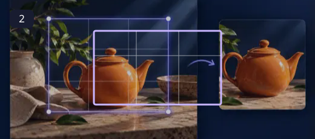
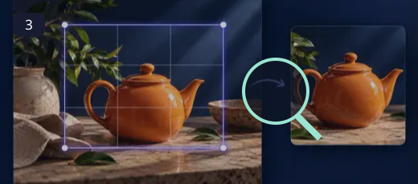
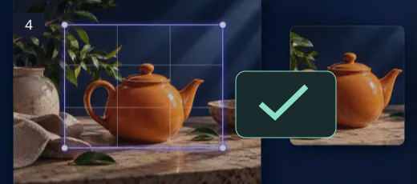

Image Cropper
A stronger frame can make the same photograph tell a clearer story.
Cropping is a choice about attention. Remove a distracting edge, bring a small subject forward, or leave deliberate space for a caption. The useful question is not how much you can remove, but what the viewer should notice first.
How to use Image Cropper ↓How to use Image Cropper
Upload an image
Choose a photo from your device. It appears in the crop workspace.

Set your frame
Drag the crop handles and choose a ratio or custom dimensions when needed.

Fine-tune the composition
Keep the subject inside the frame and check that important details are not cut off.

Export the crop
Apply the crop and download the finished image in the available format.
Precision when the destination matters
Choose a ratio when you need a consistent shape, then move the frame to protect the subject. Width, height and edge positions use pixels for exact adjustments. Drag a corner or an edge for a quick change; use the numeric fields for a repeatable crop. Cropping removes pixels and does not recreate missing detail.
- Prepare images for profile pictures, social posts and thumbnails.
- Use aspect ratios to create consistent frames.
- Adjust the crop before exporting the new image.
Start with the final destination in mind. A square crop works for many profile images, while landscape and portrait ratios suit different publishing layouts. Leave a little breathing room around faces and text.
Questions, answered
Does cropping reduce image quality?
Cropping removes pixels outside the selected frame. The remaining pixels are not enlarged unless you also resize the image.
Can I choose a custom crop?
Use the crop handles and the available aspect-ratio or dimension controls in the workspace.
Is my image uploaded?
This cropper processes the image in your browser; it is not sent to LOOX by the crop workflow.
Will this replace my original file?
The tools create a separate output. Keep the original until you have checked the exported file; the site does not provide cloud project backups.
Can I publish the result?
Use source media you own or have permission to edit. Check the destination’s requirements and the rights of anyone shown before publishing.